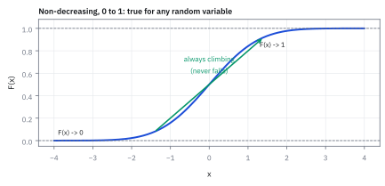
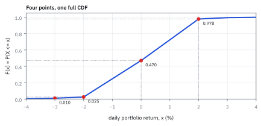
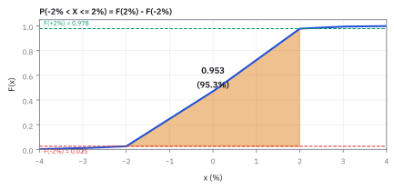
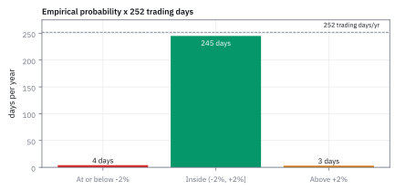
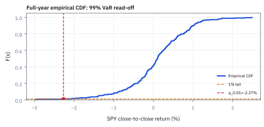

1.1 Random Variables and the Cumulative Distribution Function (CDF)
นับโอกาสจากซ้ายไปขวา เหมือนลิฟต์รับคนสะสมทีละชั้น
หน้าลิฟต์มีคนกดเลขชั้นไว้ 2, 2, 5 และ 9 ถ้าถามว่า ‘ปลายทางไม่เกินชั้น 5 มีกี่ส่วนของทั้งหมด’ คุณตอบได้ทันทีไหม?
เฉลย: นับได้ 3 จาก 4 คน หรือ 75%: บันไดที่ไต่สะสมจึงไม่สนว่าชั้นหนึ่งมีคนกี่คนอย่างเดียว แต่นับทุกคนที่อยู่ข้างล่างด้วย
ภาพนี้คือ Random Variable (RV): ตัวเลขผลลัพธ์ที่ยังไม่รู้ล่วงหน้า และ Cumulative Distribution Function (CDF): function ที่ใช้ตอบโอกาสว่า RV ไม่เกินค่าหนึ่งเท่าไร — เหมือนลิฟต์ที่รับผู้โดยสารสะสม ไม่ใช่ลืมคนที่ขึ้นไปก่อนหน้า
ศัพท์ที่ใช้ในหัวข้อนี้
- Random Variable (RV)
- Random Variable (RV) คือตัวเลขที่ผลลัพธ์อนาคตยังไม่แน่นอน แต่เรารู้กรอบและโอกาสเกิด เช่น ผลตอบแทนของพอร์ตในวันพรุ่งนี้
- Cumulative Distribution Function (CDF)
- Cumulative Distribution Function (CDF) ให้ cumulative probability ว่า Random Variable มีค่าไม่เกิน $x$ เท่าไร ใช้อ่านโอกาสของช่วงและตำแหน่งหาง
- Empirical Cumulative Distribution Function (ECDF)
- CDF ที่สร้างจากข้อมูลจริงในอดีต โดยนับสัดส่วนข้อมูลที่น้อยกว่าหรือเท่ากับค่านั้นตรง ๆ โดยไม่ต้องเดารูปแบบสมการล่วงหน้า ใช้ดูรูปข้อมูลจริงก่อนเลือกแบบจำลอง
- Value at Risk (VaR)
- จุดตัดของขนาดขาดทุน ณ ระดับโอกาสที่กำหนด เช่น VaR 99% คือจุดตัดที่อย่างน้อย 99% ของขนาดขาดทุนในแบบจำลองไม่เกินค่านี้ ไม่ใช่เพดานขาดทุน; ถ้าข้อมูลเป็นขั้นบันได โอกาสเกินจุดตัดอาจน้อยกว่า 1%
- Profit and Loss (P&L)
- ผลกำไรหรือขาดทุนสุทธิของพอร์ตในช่วงเวลาหนึ่ง วัดเป็น USD หรือ % ของมูลค่าพอร์ต
- tail (ของ distribution)
- ส่วนปลายสุดของกราฟความน่าจะเป็น ซึ่งเป็นเหตุการณ์ที่เกิดไม่บ่อยแต่ผลกระทบรุนแรง เช่น หางซ้าย (ขาดทุนหนัก)
- Net Asset Value (NAV)
- มูลค่าทรัพย์สินสุทธิทั้งหมดของพอร์ต ณ เวลานั้น ใช้เป็นฐานคำนวณผลตอบแทนหรือสัดส่วนขาดทุน
- Exchange-Traded Fund (ETF): SPY
- กองทุนที่ซื้อขายในตลาดได้เหมือนหุ้นและถือหุ้นตามดัชนี S&P 500 ใช้เป็นตัวแทนภาพรวมตลาดหุ้นสหรัฐฯ ในตัวอย่างนี้
- quantile
- จุดตัดบนแกนข้อมูลที่แบ่ง cumulative probability เช่น จุดตัด 1% คือจุดที่มีข้อมูลเพียง 1% อยู่ทางซ้ายของมัน ใช้ระบุตำแหน่งของหางหรือระดับเตือน
- Probability Density Function (PDF)
- Probability Density Function (PDF) คือ density function สำหรับค่าต่อเนื่อง บอก density รอบจุด ไม่ใช่โอกาสของจุดเดียว (ศึกษาเต็มในหัวข้อ 1.8)
- independence
- สองเหตุการณ์เป็นอิสระกันเมื่อการรู้ผลของอันหนึ่งไม่เปลี่ยนโอกาสของอีกอัน ใช้เงื่อนไขนี้เพื่อให้คูณโอกาสได้ตรง ๆ การพึ่งกันอาจทำให้ความเสี่ยงสูงขึ้นหรือลดลง จึงต้องตรวจรูปแบบการพึ่งกันก่อนรวมความเสี่ยง
- sample space
- เซตของผลลัพธ์ที่เป็นไปได้ทั้งหมดจากการทดลองสุ่ม ใช้เป็นกรอบอ้างอิงเพื่อกำหนดขอบเขตและคำนวณโอกาสเกิดของเหตุการณ์ต่าง ๆ
Random Variable คืออะไร
พรุ่งนี้พอร์ตจะบวกหรือลบ เรายังไม่รู้ แต่ข้อมูลเก่าช่วยบอกได้ว่าค่าไหนมีโอกาสมากหรือน้อย ตัวเลขที่ยังไม่รู้ล่วงหน้าแบบนี้เรียกว่า Random Variable (RV)
เราใช้ตัวพิมพ์ใหญ่ $X$ เป็นชื่อตัวแปร และใช้ตัวพิมพ์เล็ก $x$ แทนค่าจริงหนึ่งค่าบนแกน ถ้าผลลัพธ์นับเป็นจำนวนเต็มได้ เช่น จำนวนอีเมล เราเรียกว่า discrete ถ้าวัดได้ต่อเนื่อง เช่น เวลารอรถ เราเรียกว่า continuous
เครื่องมือเดียวที่ใช้เล่าโอกาสของ $X$ ได้ทั้งสองแบบคือ Cumulative Distribution Function (CDF) มันตอบว่าโอกาสที่ค่าจะไม่เกินจุดที่กำหนดมีเท่าไร
ที่มาทางประวัติศาสตร์: ทำไม Kolmogorov จึงสร้าง CDF
ก่อนทศวรรษ 1930 ทฤษฎีความน่าจะเป็นยังไม่มีรากฐานเชิงคณิตศาสตร์ที่รัดกุม นักคณิตศาสตร์รุ่นก่อนหน้าอย่าง Laplace หรือ Gauss ศึกษาความน่าจะเป็นผ่านเกมการพนันหรือความคลาดเคลื่อนทางดาราศาสตร์ โดยมองว่าผลลัพธ์ทุกแบบมีโอกาสเท่ากัน การขาดนิยามที่แน่นอนทำให้เกิดปมขัดแย้งทางเรขาคณิต เช่น Bertrand's paradox ในปี 1889 ที่คำถามเดียวกันให้คำตอบได้หลายค่าขึ้นกับวิธีสุ่ม
ในปี 1933 Andrey Kolmogorov นักคณิตศาสตร์ชาวรัสเซีย ได้ตีพิมพ์หนังสือวางรากฐานทฤษฎีความน่าจะเป็นบนทฤษฎีการวัด กำหนด sample space และนิยาม random variable ให้เป็น function ทางคณิตศาสตร์ที่แปลงผลลัพธ์ในโลกจริงให้กลายเป็นตัวเลขบนแกนจริง
หัวใจของการค้นพบนี้คือ Cumulative Distribution Function (CDF) ซึ่งทำหน้าที่ส่งผ่านความน่าจะเป็นจาก sample space มาอยู่บนเส้นจำนวนจริง นักคณิตศาสตร์และ quantitative analyst จึงสามารถใช้เครื่องมือของ calculus ในการคำนวณความเสี่ยงได้ โดยไม่จำเป็นต้องระบุรายละเอียดทั้งหมดของ sample space
สัญลักษณ์ที่ใช้ในหัวข้อนี้
| สัญลักษณ์ | ความหมาย | หน่วย |
|---|---|---|
| $X$ | random variable (random variable) เช่น ผลตอบแทนรายวันของพอร์ตที่ยังไม่รู้ผล | % ต่อวัน |
| $x$ | ค่าตัวเลขค่าหนึ่งบนแกนข้อมูลที่ $X$ อาจออกมาเป็น | เดียวกับ $X$ |
| $F(x)$ | ค่าความสูงของ CDF ที่จุด $x$ คือ cumulative probability $P(X \le x)$ | probability, 0 ถึง 1 |
| $P(A)$ | ความน่าจะเป็นของเหตุการณ์ $A$ ใด ๆ | 0 ถึง 1 |
| $a$, $b$ | ขอบล่างและขอบบนของช่วงผลตอบแทนที่สนใจบนแกนข้อมูล | เดียวกับ $X$ |
| $\text{VaR}_{99\%}$ | ระดับขาดทุนที่ความเชื่อมั่น 99% (จุดตัดหางซ้าย 1% ของผลตอบแทน) | USD หรือ % ของ NAV |
ทำไมต้องนับสะสม
นึกถึงเลขชั้น 2, 2, 5, 9 ในตัวอย่างต้นหน้า ถ้ารู้แค่จำนวนคนที่ชั้น 5 จะตอบได้หนึ่งคน แต่คำถามว่าไม่เกินชั้น 5 ต้องนับคนที่ชั้น 2 ด้วย จึงได้สามคน
CDF เก็บยอดรวมแบบหลังไว้ให้เรา เมื่อเปลี่ยนคำถามจากไม่เกิน 5 เป็นไม่เกิน 9 ก็เติมคนที่เหลือเข้าไป คำถามเกี่ยวกับช่วงจึงตอบได้ด้วยการลบยอดสะสมที่ขอบซ้ายและขอบขวา
ขั้นที่ 1 — นิยาม CDF
สัญลักษณ์ $:=$ หมายถึง กำหนดนิยามให้เท่ากับ
ใส่เกณฑ์ $x$ แล้วรวมโอกาสของทุกผลลัพธ์ที่ไม่เกินเกณฑ์นั้น เช่น สุ่มหนึ่งคนจากสี่คนในตัวอย่าง ได้ $F(5)=3/4$ เพราะสามคนมีเลขชั้นไม่เกิน 5
ถ้าถามค่าจุดเดียว ในกรณีค่าแยกให้ใช้ ตารางโอกาสของผลลัพธ์แต่ละค่า หรือขนาดการกระโดดของ CDF ส่วนตัวแปรที่มี density แบบต่อเนื่องมี $P(X=x)=0$; ความสูง density ไม่ใช่โอกาสของจุดนั้น ต้องหาพื้นที่บนช่วงจึงได้ probability
คุณสมบัติที่ CDF ต้องมีเสมอ
คุณสมบัติสำคัญข้อแรก: กราฟของ $F$ ไม่มีวันลาดลง (non-decreasing) เปรียบเหมือนเลขไมล์สะสมบนหน้าปัดรถยนต์ ยิ่งระยะทางเพิ่มขึ้น ตัวเลขมีแต่จะเพิ่มขึ้นหรือคงที่ ไม่มีวันลดลง ต่างจากราคาหุ้นที่ขึ้น ๆ ลง ๆ ได้ทุกวัน
ขั้นที่ 2 — เงื่อนไข non-decreasing
ประโยคที่ว่ากราฟไม่ลาดลงฟังดูชัดจนอยากข้าม แต่มันต้องเป็นผลที่ออกมาจากนิยามในขั้นที่ 1 ไม่ใช่กฎที่ตั้งขึ้นมาเอง ห้าบรรทัดนี้คือทางที่ได้มันมา และเป็นทางเดียวกับที่ขั้นที่ 4 จะใช้ซ้ำ
ลองนึกถึงการนับของใส่กอง: เลื่อนเกณฑ์ไปทางขวา ของที่เคยนับได้ก็ยังอยู่ ได้แต่เพิ่มของใหม่เข้าไป ไม่เคยเอาออก บรรทัดแรกเขียนความจริงข้อนั้นด้วยสัญลักษณ์ คือกองซ้ายเป็นส่วนย่อยของกองขวาเสมอ
ที่เหลือคือทำให้คำว่า ‘ได้แต่เพิ่ม’ กลายเป็นตัวเลข หั่นกองขวาเป็นกองซ้ายบวกส่วนที่เพิ่ม สองชิ้นไม่ทับกัน โอกาสจึงบวกกันได้ และส่วนที่เพิ่มติดลบไม่ได้ อย่างแย่ที่สุดคือศูนย์ บรรทัดสุดท้ายจึงอ่านว่า $F(x_2)$ คือ $F(x_1)$ บวกของที่ไม่ติดลบ ลดลงไม่ได้แน่นอน
ทำไมกราฟจึงไม่ลดลง
ทำไมกราฟจึงไม่มีวันลดลง? เหตุการณ์ที่ผลลัพธ์ไม่เกินจุดตัดด้านซ้าย เป็นส่วนหนึ่งของเหตุการณ์ที่ผลลัพธ์ไม่เกินจุดตัดด้านขวาเสมอ ข้อมูลทุกชิ้นที่ผ่านจุดตัดแรกจึงผ่านจุดตัดหลังด้วย cumulative probability ของช่วงแคบกว่าจึงไม่มีทางมากกว่าช่วงกว้างกว่าได้
ขั้นที่ 3 — เงื่อนไขปลายทางทั้งสองข้าง
กราฟ CDF ทุกเส้นเริ่มที่ศูนย์ทางซ้ายและจบที่หนึ่งทางขวาเสมอ ไม่มีข้อยกเว้น คำถามที่ควรถามตรงนี้คือทำไมต้องเป็น 0 กับ 1 เป๊ะ ๆ ไม่ใช่ 0.01 กับ 0.99
ทอยลูกเต๋าหนึ่งลูกแล้วถามว่า ‘ได้แต้มน้อยกว่าหรือเท่ากับ 0’ ความน่าจะเป็นเป็นศูนย์ เพราะแต้มต่ำสุดที่เป็นไปได้คือ 1 จึงไม่มีสักหน้าที่เข้าเงื่อนไขนี้ ถามกลับทางว่า ‘ได้แต้มน้อยกว่าหรือเท่ากับ 6’ ความน่าจะเป็นเป็นหนึ่ง เพราะครบทั้งหกหน้า
ความเป๊ะอยู่ตรงนี้: ทุกผลลัพธ์ที่เป็นไปได้ต้องถูกนับรวมกันพอดีหนึ่ง ถ้าปลายขวาไม่ถึงหนึ่ง จะเหลือความน่าจะเป็นส่วนหนึ่งที่ไม่มีเหตุการณ์รองรับ ซึ่งขัดกับข้อกำหนดว่าความน่าจะเป็นรวมของทุกสิ่งที่เป็นไปได้เท่ากับหนึ่ง และถ้าปลายซ้ายไม่เป็นศูนย์ ก็จะมีความน่าจะเป็นผุดขึ้นมาจากเหตุการณ์ที่ไม่มีทางเกิด
บรรทัดแรกนิยามเซต $A_n$ ว่าเป็นเหตุการณ์ที่ $X$ มีค่าไม่เกิน $-n$ พอ $n$ โตขึ้น เซตนี้หดลงเรื่อย ๆ เพราะการที่ $X\le-(n+1)$ ย่อมแปลว่า $X\le-n$ ด้วย ถ้าถอยไปไกลพอ ทุกค่าที่เป็นไปได้ก็ตกออกไปหมด จุดร่วมจึงเหลือเซตว่าง
ความน่าจะเป็นของเซตว่างเป็นศูนย์ตามข้อกำหนดพื้นฐาน และเมื่อเหตุการณ์หดลงจนไม่เหลืออะไร ความน่าจะเป็นก็หดตามลงไปจนเป็นศูนย์เช่นกัน ค่าจำกัดทางซ้ายจึงเป็นศูนย์อย่างหลีกเลี่ยงไม่ได้ ไม่ใช่ข้อตกลงที่ตกลงกันไว้
สองบรรทัดล่างทำทางกลับกัน เซต $B_n$ โตขึ้นเรื่อย ๆ และเมื่อ $n$ โตพอจะครอบคลุมทุกค่าที่เป็นไปได้ รวมกันได้ทั้ง sample space ความน่าจะเป็นจึงเป็นหนึ่ง เพราะพื้นที่ทั้งหมดถูกนับครบ
ในทางปฏิบัติ นี่คือเหตุผลที่พื้นที่ใต้กราฟ CDF ทั้งหมดเท่ากับหนึ่งเสมอ และเป็นเหตุผลที่อ่านความเสี่ยงจากหางซ้ายได้ ไม่ว่าจะหางไกลแค่ไหน เพราะไม่มี probability ก้อนใดตกค้างอยู่นอกกราฟ
อีกกฎหนึ่ง: จุดบนขั้นบันไดรวมค่าที่ขอบด้วย
CDF ต้องต่อเนื่องจากด้านขวา เพราะนิยามรวมค่าที่เท่ากับเกณฑ์ด้วย เมื่อเกณฑ์มาถึงชั้น 5 คนที่ไปชั้น 5 ถูกนับแล้ว จึงมี $F(5)=3/4$ และขยับไป 5.001 ก็ยังได้ 3/4 ส่วนก่อนถึง 5 มีเพียง 2/4 ขนาดที่กระโดดขึ้น $1/4$ จึงเป็นโอกาสที่ได้ชั้น 5 พอดี
ขั้นที่ 4 — ขนาดการกระโดดของ CDF คือความน่าจะเป็นที่จุดเดี่ยว
ในนิยามของ CDF เครื่องหมายอสมการคือ $\le$ ซึ่งรวมค่าที่จุดขอบไว้ด้วยเสมอ ผลลัพธ์คือหากตัวแปรมีโอกาสตกที่จุดใดจุดหนึ่งเป็นก้อนเดี่ยว กราฟของ CDF จะกระโดดเป็นขั้นบันได
ความสูงของขั้นกระโดดที่จุด $x_0$ คือผลต่างระหว่างความสูงของ CDF ที่จุดนั้น กับ limit ทางซ้าย $F(x_0^-)$ ซึ่งสะท้อนความน่าจะเป็นของจุดนั้นอย่างแม่นยำ
แยกเหตุการณ์ที่จุดขอบออกจากเหตุการณ์ที่อยู่ต่ำกว่าอย่างเด็ดขาด สองส่วนนี้ไม่ซ้อนทับกัน ความน่าจะเป็นจึงแยกบวกกันได้ตรง ๆ เพราะสองส่วนไม่ทับกันเลย
เมื่อย้ายข้างสมการ เราจะได้ความน่าจะเป็นที่จุดเดี่ยวเท่ากับค่า CDF ณ จุดนั้น ลบด้วยค่าสะสมที่ประชิดจากฝั่งซ้าย ซึ่งก็คือขนาดการกระโดดของกราฟบันได
ในตัวอย่างคนสี่คนหน้าลิฟต์ ที่ชั้น 5 ความสูงกระโดดจาก 0.50 ขึ้นเป็น 0.75 จึงได้โอกาส 0.25 พอดี ส่วนตัวแปรที่ต่อเนื่อง กราฟไม่กระโดด โอกาสที่จุดเดี่ยวจึงเป็นศูนย์
แล้วเอาไปใช้ทำอะไรได้จริงบ้าง
การนับสะสมจากซ้ายไปขวาไม่ใช่แบบฝึกหัด มันคือวิธีตอบคำถามสามข้อที่โต๊ะถามทุกวัน
ข้อแรก วันแย่ ๆ แย่แค่ไหน ตัวเลข Value at Risk ที่ฝ่ายความเสี่ยงรายงานทุกเช้า คือการอ่านค่าจากเส้นสะสมนี้ที่ระดับ 1% หรือ 5%
ข้อสอง ปีหนึ่งจะเจอวันแบบนี้กี่วัน แปลงโอกาสเป็นจำนวนวันด้วยการคูณจำนวนวันทำการ ซึ่งทำให้ตัวเลขที่เป็นนามธรรมกลายเป็นสิ่งที่วางแผนรับมือได้
ข้อสาม ตั้งเกณฑ์เตือน ถ้าอยากให้ระบบเตือนไม่เกินสัปดาห์ละครั้ง เราอ่านย้อนจากเส้นสะสม ไปหาว่าเกณฑ์ควรอยู่ตรงไหน
Figure 1.1a — A CDF only ever climbs

กราฟนี้สาธิตว่า Cumulative Distribution Function (CDF) ต้องไม่ลดลง และปลายซ้ายเข้าใกล้ 0 ปลายขวาเข้าใกล้ 1 ไม่ว่า random variable จะเป็น discrete หรือ continuous — นี่คือกฎก่อนนำข้อมูลจริงมาอ่าน
ข้อมูลที่โจทย์ให้: empirical CDF ของผลลัพธ์รายวัน
| $x$ (SPY daily return) | $F(x)=P(X\le x)$ |
|---|---|
| -2.2663% | 0.01195 (3/251) |
| -2.00% | 0.01594 (4/251) |
| 0% | 0.41036 (103/251) |
| +2.00% | 0.98805 (248/251) |
ข้อมูลคือ close-to-close simple returns ของ SPY โดยใช้ราคา close 252 จุดตั้งแต่ 2024-01-02 ถึง 2024-12-31 เพื่อสร้าง returns 251 จุดตั้งแต่ 2024-01-03 ถึง 2024-12-31 และตรึงค่าทั้งหมดไว้ใน figure code จึงไม่มี network ตอน build; 250 trading days เป็นค่าประมาณสำหรับแปลงเป็นจำนวนวัน
Figure 1.1b — Schematic CDF geometry

รูปนี้เป็นภาพจำลองเพื่อฝึกอ่านความสูงของ CDF เท่านั้น จุดและเส้นถูกวางเพื่อสาธิตการหาความน่าจะเป็นของช่วงผลตอบแทน ไม่ใช่ข้อมูลตลาดจริง
โอกาสที่ค่าจะอยู่ในช่วง
ถ้าอยากรู้โอกาสที่ผลตอบแทนจะตกอยู่ระหว่างสองตำแหน่ง เราทำอย่างไร? เราแบ่งช่วงเหตุการณ์ $\{X \le b\}$ ออกเป็นสองชิ้นที่ไม่ทับซ้อนกัน: ชิ้นซ้าย $\{X \le a\}$ และชิ้นกลาง $\{a \lt X \le b\}$ เมื่อสองชิ้นไม่ซ้อนทับกัน ความน่าจะเป็นของทั้งสองชิ้นจึงบวกกันได้ตรง ๆ
ขั้นที่ 5 — หั่น CDF แล้วหาพื้นที่ตรงกลาง
CDF ถึง $b$ ประกอบด้วยชิ้นซ้ายที่จบตรง $a$ กับชิ้นกลางที่เราต้องการ ย้ายชิ้นซ้ายออกจึงเหลือผลต่างระหว่างระดับ CDF ทั้งคู่
เราอยากได้โอกาสของช่วงตรงกลาง แต่ CDF ตอบได้อย่างเดียวคือ ‘ตั้งแต่ซ้ายสุดมาถึงตรงนี้’ ทางออกคือมองช่วงถึง $b$ ว่าเป็นสองท่อนต่อกัน ท่อนซ้ายจบตรง $a$ กับท่อนกลางที่เราต้องการ
สองท่อนไม่มีผลลัพธ์ร่วมกันเลย ท่อนขวาต้องมากกว่า $a$ ส่วนท่อนซ้ายต้องไม่เกิน สัญลักษณ์ว่างเปล่าในบรรทัดสองคือกองที่ไม่มีสมาชิก เมื่อไม่ทับกันก็บวกโอกาสได้ตรง ๆ พอเขียนสองก้อนเป็น $F$ แล้วย้ายข้างครั้งเดียว ก็เหลือผลต่างของความสูงที่ $a$ กับที่ $b$ อ่านจากกราฟได้เลยโดยไม่ต้องรู้รูปทรง distribution
Figure 1.1c — subtract two heights, get the band

การหาโอกาสของช่วงคือการอ่านความสูง CDF สองตำแหน่งแล้วลบกัน: $F(b)-F(a)$ โดยไม่ต้องสมมติรูปทรงของ distribution
กลับไปที่ปัญหา: หา A, B, และ VaR
นำค่า $F(x)$ ที่นับได้จากข้อมูลประวัติศาสตร์ในตารางข้างต้น มาตอบคำถามของทีมความเสี่ยงทีละข้อ ตั้งแต่โอกาสที่ผลตอบแทนอยู่ในกรอบปกติ ไปจนถึงระดับขาดทุนในหางซ้าย
ส่วน A — กรอบผลตอบแทน -2% ถึง +2%
แทนค่าความสูง CDF จากตารางผลตอบแทน SPY ลงในสูตรความน่าจะเป็นของช่วงที่เพิ่งพิสูจน์ไว้:
ขั้นที่ 6 — หาโอกาสในกรอบแล้วแปลงเป็นวัน
ลบค่า CDF ที่ขอบขวากับขอบซ้าย แล้วคูณด้วย 250 วันเทรดเพื่อเปลี่ยนสัดส่วนเป็นภาพบนปฏิทิน
ข้อมูล 244 จาก 251 วันอยู่ในกรอบ คิดเป็น 97.21% หรือประมาณ 243 วันต่อปี
ส่วน B — โอกาสกำไรเกิน 2% (right tail)
ถ้าต้องการหาโอกาสที่ผลตอบแทนจะพุ่งสูงเกิน $+2\%$ (หางขวา) เราใช้กฎส่วนเติมเต็ม (Complement Rule) คือเอา 1 ลบด้วย cumulative probability ถึงจุดนั้น:
ขั้นที่ 7 — หา right tail แล้วแปลงเป็นวัน
โจทย์ถามหางขวา แต่ตารางที่มีเป็นยอดสะสมจากซ้าย จึงต้องเอาหนึ่งมาลบ
ส่วนที่อยู่เหนือ $+2\%$ มี 3 จาก 251 วัน หรือ 1.195%; บนปีที่มี 250 วันเทรดจึงเกิดราว 3 วัน
ส่วน C — กฎทั่วไป
หลักการเดียวกันนี้ใช้แปลงความน่าจะเป็นของเหตุการณ์ตลาดใด ๆ ให้กลายเป็นจำนวนวันที่จับต้องได้บนปฏิทินจริง:
ขั้นที่ 8 — กฎทั่วไป: probability สู่จำนวนวัน
สูตรคูณ 250 ถูกใช้ซ้ำทั้งเล่ม จึงต้องตรวจมันสักครั้งด้วยเลขที่นับมือไหว สองวันคือขนาดที่เล็กพอจะเขียนทุกผลลัพธ์ออกมาได้ครบ แล้วเทียบกับสูตรสั้น ถ้าสองทางให้เลขเดียวกัน สูตรสั้นก็ใช้ได้กับ 250 วันด้วยเหตุผลเดียวกัน
สูตรคูณ 250 ถูกใช้ทั้งเล่ม แต่มันจริงเพราะอะไร วิธีตรวจคือย่อโลกลงเหลือสองวันที่นับมือไหว ไม่เกิดเลยคือพลาดทั้งสองวัน เกิดครั้งเดียวเกิดได้สองแบบจึงคูณสอง และเกิดทั้งสองวันคือคูณกันตรง ๆ สามตัวรวมกันได้ 1.00 พอดี
ถ่วงจำนวนครั้งด้วยโอกาสของมันได้ 0.60 วัน แล้วลองสูตรสั้น $2p$ กับเลขชุดเดียวกัน ก็ได้ 0.60 เท่ากันเป๊ะ สูตรจึงไม่ใช่การเดา เหตุผลที่ขยายเป็น $n$ วันได้คือทุกวันมีโอกาสเท่ากันและไม่เกี่ยวกัน การนับเฉลี่ยจึงบวกโอกาสของแต่ละวันไปเรื่อย ๆ ข้อนี้พิสูจน์เต็มรูปในหัวข้อ 1.3
ปิดโจทย์เปิดเรื่อง: หา VaR
ตอบคำถามเปิดเรื่องของทีมความเสี่ยง: จากตารางข้อมูลในอดีต ข้อมูลลำดับที่ 3 จาก 251 วัน (คิดเป็นสัดส่วนสะสม $\lceil 0.01 \times 251 \rceil = 3$) มีผลตอบแทนอยู่ที่ -2.2663%:
ขั้นที่ 9 — อ่านหาง 1% เป็น VaR แล้วแปลงเป็น USD
เรียง 251 วันจากแย่ไปดี จุดตัด 1% อยู่ที่ลำดับ 3 ซึ่งให้ผลตอบแทน $-2.2663\%$ จากนั้นคูณขนาดพอร์ต USD 50 million
จุดตัดหางซ้ายจากข้อมูลคือขาดทุน 2.2663% เมื่อนำไปคูณพอร์ต $\$50$ million ได้ historical VaR ราว $\$1.13$ million
Worked Example — โจทย์จิ๋วที่คำนวณได้
โจทย์ให้อะไรมาบ้าง: ข้อมูล 251 วันให้ historical VaR 99% เท่ากับ 2.2663% และพอร์ตมีมูลค่า USD 50 million. ต้องแปลงสัดส่วนขาดทุนเป็นเงิน.
คำตอบ: $0.022663\times\$50\text{M}=\$1.13315\text{M}$ จึงรายงานได้ราว USD 1.13 million.
ตรวจเองใน 10 วินาที: $0.022663\times50=1.13315$ และหน่วยของคำตอบคือ USD million.
แปลว่าอะไรบนโต๊ะ: เป็นระดับขาดทุนจากหางข้อมูลเก่า ไม่ใช่เพดานขาดทุนวันพรุ่งนี้. กับดักคืออ่าน CDF ที่จุดหนึ่งเป็น probability เฉพาะจุด.
Figure 1.1d — turning probability into trading days

คูณความน่าจะเป็นด้วยวันเทรดราว 250 วัน เพื่อแปลงสัดส่วนให้เป็นจำนวนวันที่ทีมความเสี่ยงคาดว่าจะพบในหนึ่งปี
กับดัก: CDF ไม่ใช่ความน่าจะเป็นที่จุดเดียว
$F(-2\%)=4/251$ นับวันที่ผลตอบแทนไม่เกิน $-2\%$ คือขาดทุนตั้งแต่ 2% ขึ้นไป ไม่ใช่วันที่ขาดทุนไม่เกิน 2% และไม่ใช่โอกาสที่ผลตอบแทนเท่ากับ −2% พอดี
สัดส่วนนี้มาจากข้อมูลเก่า ไม่ได้ยืนยันว่าปีหน้าจะมีสัดส่วนเดียวกัน
ข้อจำกัด: วิธีนี้สมมติอะไร และของจริงเป็นอย่างไร
| เรื่อง | วิธีนี้สมมติว่า | ของจริงเป็นอย่างไร | ผลที่ตามมาเวลาใช้งาน |
|---|---|---|---|
| ที่มาของตัวเลข | อดีตเป็นตัวแทนของอนาคตได้ | ตลาดเปลี่ยนโครงสร้าง กฎเปลี่ยน คู่แข่งเปลี่ยน | เส้นสะสมที่นับจากอดีตอาจไม่ตรงกับพรุ่งนี้ |
| ปลายหาง | มีข้อมูลพอจะบอกหางได้ | วันที่แย่ที่สุดเกิดไม่กี่ครั้งในสิบปี | ที่ระดับ 99% ขึ้นไป ตัวเลขมาจากข้อมูลไม่กี่จุด จึงไม่มั่นคง |
| independence | แต่ละวันไม่เกี่ยวกัน | วันแรงมักตามด้วยวันแรง | การนับวันแบบตรง ๆ ทำให้ประเมินความเสี่ยงของช่วงยาวต่ำเกินจริง |
รู้ข้อจำกัดไม่ได้แปลว่าห้ามใช้ แต่แปลว่ารู้ว่าตัวเลขไหนเชื่อได้แค่ไหน แถวกลางคือเหตุผลที่เราจะเรียน Expected Shortfall ในหัวข้อ 17.1 และแถวล่างคือเหตุผลที่ต้องมีบทเรื่องอนุกรมเวลาทั้งบท
Figure 1.1e — Full-year empirical SPY CDF and 1% order statistic

สำหรับ VaR ใช้ผลตอบแทนจริง 251 วันของปี 2024 จุดตัด 1% คือข้อมูลลำดับที่ ceil(0.01×251)=3 หลังเรียงจากแย่ไปดี จึงได้ -2.2663% และคิดเป็นขาดทุน VaR ราว 2.27% หรือประมาณ \$1.13M บนพอร์ต \$50M
สรุปที่ใช้ได้จริง
- $F(x) = P(X \le x)$ ใช้ได้กับ Random Variable ทุกประเภท ทั้งแบบ discrete และ continuous โดยไม่ต้องเปลี่ยนสูตร
- หาความน่าจะเป็นของช่วง: นำความสูงของ CDF สองตำแหน่งมาลบกัน $P(a \lt X\le b)=F(b)-F(a)$ และหาความน่าจะเป็นของหางขวาด้วย $1-F(b)$
- CDF ต้องเป็น function ไม่ลดลง (non-decreasing) เสมอ โดยเริ่มจาก 0 ที่ $-\infty$ และสิ้นสุดที่ 1 ที่ $+\infty$
- แปลงความน่าจะเป็นรายวันเป็นจำนวนวันบนปฏิทิน: คูณด้วยจำนวนวันเทรดต่อปี (ราว 250 วัน) เพื่อให้เห็นความถี่ของเหตุการณ์จริง
- 99% historical VaR คือการอ่านค่าผกผันของ CDF จากหางซ้าย 1% เพื่อประเมินเงินเสี่ยงเสียในสภาวะปกติ (รายละเอียดเต็มในหัวข้อ 17.1)